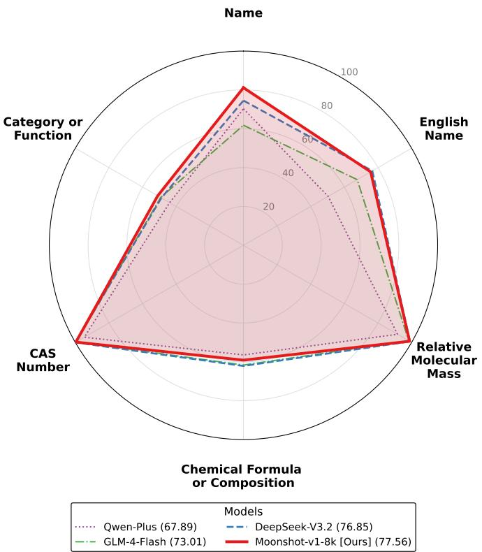
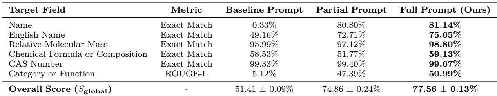

上节课讲了 SCoPE 框架和 Exact Match 指标。本节课需要理解 ROUGE-L 这个新指标。
它基于一个叫 LCS（最长公共子序列）的算法——下面会从零开始，带大家手算一次。
⚡ 先修：5 分钟搞懂 LCS 和 ROUGE-L
LCS（最长公共子序列）是什么？
看两个句子，找出它们 顺序相同的最长片段：
句子 B：I love apples
LCS = "I love apples"（4 个词）
LCS 跟"最长公共子串"的区别：LCS 不要求连续——只要顺序一致就行。
句子 B：The dog sat on the rug
LCS = "The sat on the"（4 个词）——"sat on the" 这 3 个词是连续的，加上前面的 "The"，一共 4 个
从 LCS 到 ROUGE-L
ROUGE-L 用 LCS 来算三个量：
① 精确率（Precision） = LCS 长度 ÷ 模型输出长度
"模型输出的内容里，有多少是靠谱的？"
② 召回率（Recall） = LCS 长度 ÷ 正确答案长度
"正确答案里，模型找出了多少？"
③ ROUGE-L F1 = 2 × (P × R) / (P + R)
"综合平衡精确率和召回率"
手算一次就懂了
| 项 | 内容 |
|---|---|
| 正确答案（人工标注） | "Nicotinic acid derivative" |
| 模型输出 | "Nicotinic acid derivative drug" |
| LCS | "Nicotinic acid derivative" = 3 个词 |
| Precision | 3/4 = 75%（模型输出 4 个词，3 个对了） |
| Recall | 3/3 = 100%（正确答案 3 个词全部找出来了） |
| ROUGE-L F1 | 2 × (0.75 × 1) / (0.75 + 1) = 85.7% |
相比之下，Exact Match 会给 0 分（因为模型多了一个词 "drug"）。
ROUGE-L 更宽容，适合评估描述性字段——即使措辞不完全一样，只要核心语义一致，就能给高分。
📐 综合评分：把所有字段的分数加起来
评估时，每个样本要提取 6 个字段。论文定义了全局综合评分 Sglobal：
S_global = (所有样本在 6 个字段上的得分总和) ÷ (样本数 × 6)简单说就是：把所有分数加起来求平均，得到一个数字来衡量模型整体表现。
🧪 单样本测试：看看模型输出长什么样
用一个真实案例来感受。输入文本是关于 Acipimox（阿昔莫司）的一段描述：
模型输出对比人工标注（Table I）：
| 字段 | 人工标注（标准答案） | 模型输出 | 结果 |
|---|---|---|---|
| Name | 阿昔莫司 | ["阿昔莫司"] | ✅ Exact Match |
| English Name | None | ["None"] | ✅ 正确识别缺失 |
| Chemical Formula | 5-methylpyrazine-2-carboxylic acid 4-oxide | ["5-methylpyrazine-2-carboxylic acid 4-oxide"] | ✅ Exact Match |
| Category or Function | Nicotinic acid derivative; Inhibits free fatty acid release | ["Nicotinic acid derivative", "Inhibit free fatty acid release", "Hypolipidemic drug"] | ✅ ROUGE-L（提取了核心语义，还额外识别了"降脂药"） |
| CAS | None | ["None"] | ✅ 正确识别缺失 |
| Relative Molecular Mass | None | ["None"] | ✅ 正确识别缺失 |
注意：Category or Function 字段，模型不仅准确提取了标准答案中的信息，还额外识别出了 "Hypolipidemic drug"（降脂药）这个功能——这在人工标注时被漏掉了。
📈 模型对比：为什么 Moonshot 最好？
论文用 SCoPE 框架测试了 4 个模型（Fig. 3 雷达图），结果：

| 模型 | Sglobal | 强项 | 弱项 |
|---|---|---|---|
| Moonshot-v1-8k | 77.56% | Name 字段 (81%)、Category (51%) | / |
| DeepSeek-V3.2 | 76.85% | Chemical Formula (62%)、English Name (77%) | 整体略低 |
| GLM-4-Flash | 73.01% | 均衡但都不突出 | 无特别优势 |
| Qwen-Plus | 67.89% | / | 整体最低 |
在 CAS 和 Molecular Mass 这类简单字段上，所有模型都接近满分（94%-100%）。但在复杂字段上，差距就拉开了——Moonshot 的优势体现在深度理解上下文和严格遵循输出格式。
🔬 消融实验：每个模块贡献多少？
为了验证 SCoPE 框架的 4 个模块是否真的有用，论文做了 Ablation Study（消融研究）。
消融研究的思路很简单：把框架的一部分去掉，看性能掉多少。 掉的越多，说明那部分越重要。

| Prompt 版本 | Sglobal | 相比上一个提升 |
|---|---|---|
| Baseline（只有基础指令） | 51.41% | — |
| Partial（+字段定义 + 处理规则） | 74.86% | 🚀 +23.45% |
| Full / SCoPE（+ 输出示例） | 77.56% | 📈 +2.70% |
几个关键发现：
- 最大的飞跃来自 Baseline → Partial（+23.45%），说明明确字段定义和处理规则是最关键的
- 从 Partial → Full（+2.70%），说明 One-shot 示例锦上添花但不是核心
- 有趣的反常：在 Chemical Formula 字段上，Partial 反而比 Baseline 低了（51.77% vs 58.53%），因为规则太严格把化学式里的标点符号也切错了。但 Full Prompt 用 One-shot 示例把这个错误纠正回来了（59.13%）
- 稳定性：Full Prompt 的标准差只有 0.13%（5 次独立实验），Partial 是 0.24%——说明加了示例后输出更稳定
规则（字段定义 + 处理规则）是框架的骨架，贡献了 23.45% 的提升。示例（One-shot）是调节精度的小工具，在前者的基础上再加 2.70%。
📌 这节课的核心
| 问题 | 答案 |
|---|---|
| 为什么需要两种指标？ | 客观字段（唯一答案）用 Exact Match，描述性字段用 ROUGE-L |
| ROUGE-L 怎么算？ | 基于 LCS 算精确率和召回率的 F1 值 |
| SCoPE 最终得分？ | 77.56%（Moonshot-v1-8k） |
| 哪个模块贡献最大？ | 字段定义 + 处理规则（+23.45%） |
| One-shot 有用吗？ | 锦上添花（+2.70%），还能修正规则过严的问题 |
✏️ 课后练习
🧮 练习 1：手算一次 ROUGE-L
正确答案："Inhibits fatty acid release"
模型输出："Inhibits release of fatty acid"
步骤：
- LCS 长度 = ？
- Precision = ？
- Recall = ？
- ROUGE-L F1 = ？
💡 解析
正确答案 3 个词，模型输出 4 个词。
LCS = "Inhibits fatty acid"（注意：虽然模型输出是 "release of fatty acid"，但顺序不同。"fatty acid" 在两边都是连续的，再加上 "Inhibits"，所以 LCS = "Inhibits fatty acid" = 3 个词）
等等——让我重新看：正确答案 = ["Inhibits", "fatty", "acid", "release"]（4 个词），模型输出 = ["Inhibits", "release", "of", "fatty", "acid"]（5 个词）。
LCS = "Inhibits fatty acid" = 3？还是 "Inhibits release" = 2？
正确答案顺序：Inhibits → fatty → acid → release
模型输出顺序：Inhibits → release → of → fatty → acid
最长公共子序列 = "Inhibits fatty acid"（3 个词，在两边顺序一致：Inhibits 在 fatty 和 acid 之前）
Precision = 3/5 = 60%，Recall = 3/4 = 75%
ROUGE-L = 2×(0.6×0.75)/(0.6+0.75) = 0.9/1.35 = 66.7%
📊 练习 2：消融实验解读
消融实验中，Baseline → Partial 提升了 23.45%，但 Partial → Full 只提升了 2.70%。
这说明什么？能不能说"One-shot 不重要"？
💡 参考答案
不能说 One-shot 不重要。两点原因：① 它在 Chemical Formula 字段上修正了规则过严的问题，把分数从 51.77% 提升到 59.13%；② 它降低了输出的标准差（0.24% → 0.13%），提高了稳定性。但确实，最核心的贡献来自明确的规则（字段定义 + 处理规则）。
🤔 练习 3：想一想
论文用了 Exact Match 和 ROUGE-L 两种指标。你觉得这两种指标各自的缺点是什么？
💡 参考答案
Exact Match 太严格——一个字不同就 0 分，对于同义词（如 "drug" vs "medicine"）不公平。ROUGE-L 只关心词序不关心语义——比如 "hot dog" 和 "dog is hot" 有相同的词但意思完全不同，ROUGE-L 可能给高分。所以两套指标配合使用是合理的。